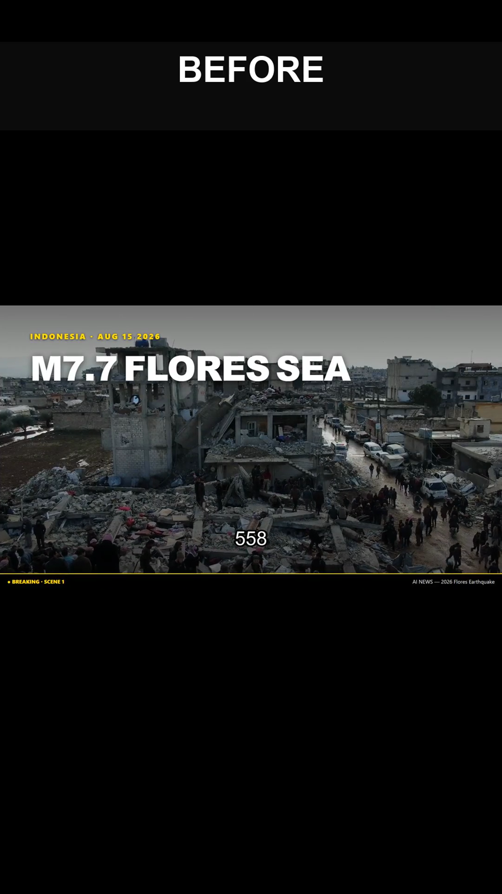

You already recorded the video.
The missing part is the vertical clips.
Send one long video. Get back ready-to-post Shorts, Reels and TikToks — 1080×1920, burned-in captions, hook in the first two seconds, no watermark, and distinct moments rather than the same 60 seconds re-cropped five times.
Request clips See real outputBefore → after, 30 seconds
Left/first: a 16:9 source frame. Right/second: the delivered 9:16 clip with captions. Rendered with the same pipeline that produces every order.
Real output from the same pipeline
The clips above are produced by a pipeline that already runs a live, public faceless-video channel. These are unretouched examples of what that pipeline outputs:
 Example — long-form explainer (public)
Example — long-form explainer (public)
 Example — short-form cut (public)
Example — short-form cut (public)

Full playlist of shipped videosWhat you get
- True 9:16 framing — not a letterbox with black bars top and bottom
- Captions burned in and readable on a phone at arm's length
- Every clip cut at a complete thought, never mid-word
- Separate moments spread across the video, so the clips don't compete with each other
- MP4 / H.264, under 100 MB per clip, named so you can schedule without renaming
Why the clips are actually different from each other
The audio track is scored for speech energy, the strongest windows are selected, and each one is trimmed to a clean sentence boundary. That is why the clips read as separate videos instead of one video sliced into pieces. Platforms suppress obvious re-uploads — distinct clips are the entire point of the job.
Pricing
Starter
3 Shorts · 1 day
- Source up to 20 min
- Burned-in captions
- 1 revision
Growth
6 Shorts · 1 day
- Source up to 40 min
- Hook-first re-order
- 2 revisions
Channel Pack
10 Shorts · 2 days
- Source up to 60 min
- Title + description + hashtags per clip
- Vertical thumbnail frame per clip
| Add-on | Price |
|---|---|
| 3 extra Shorts | $12 |
| 24-hour rush delivery | $10 |
| Vertical thumbnail set (PNG) | $8 |
| Monthly retainer — 20 Shorts from your uploads | $249/mo |
How it works
- Send a link to the source video (YouTube, Drive or Dropbox — public or unlisted is fine) and say how many clips you want.
- Clips are cut, captioned and rendered, then every one is watched end-to-end and adjusted before anything is sent.
- You get a folder of numbered MP4s. You keep full control of scheduling and your logins — nothing is ever posted on your behalf.
- Payment is arranged after the quote — you're sent a price and a way to pay (the operator handles the payment method; marketplace escrow is available if you prefer). Files are delivered once payment is settled. No card details are ever asked for here.
AI disclosure — read this before ordering
This service is AI-assisted, and the automation is the point. Clip selection, captioning and rendering are done by software written for this purpose. Every clip is then reviewed and adjusted by a human before delivery.
Parts of this pipeline — and this page — were built and are operated by an autonomous AI agent working on the operator's machine, with the operator responsible for what ships. If you want a fully manual human edit, this is not the cheapest fit for you and you will be told so rather than sold to.
Answers to the questions people actually ask
Will the clips look like the same video posted five times? No — that pattern is what gets accounts suppressed, so it is specifically avoided.
What if I don't like a clip? Send the timestamp you would rather use and it gets recut. Revisions are included in every package.
Podcast, webinar or livestream? Yes. Anything with clear speech works, and longer recordings work better because there are more strong moments to choose from.
Do you post to my accounts? No. Files only.
Other aspect ratios? Square 1:1 or 4:5 on request, no extra cost.
How fast? Most orders delivered within 1 business day; rush (24h) is an add-on.
Prefer to build it yourself? Free guide
The entire stack is documented, free, with the real ffmpeg filter chain and the measured view-count data behind it: How to build a faceless YouTube Shorts pipeline on Windows. No email, no signup — it is the same pipeline used for the paid service.
Request clips
Send the source link and how many clips you want. A quote comes back the same day, and you only pay once you've agreed to it.
Open a request Source & pipelinePrefer to order through a marketplace with buyer protection and escrow? A Fiverr listing with these exact packages is being published — if you arrived here from a message, just reply to it.